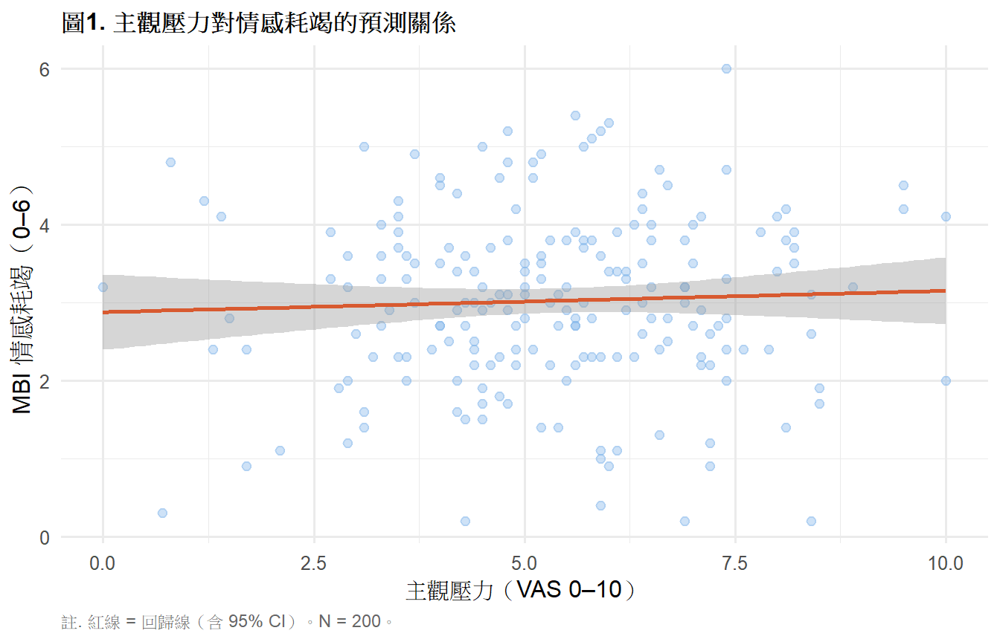

library(tidyverse)
library(gt)
library(car)
library(lm.beta)
# install.packages("lm.beta")
ems <- read.csv("data/ems_main.csv",
fileEncoding = "UTF-8",
stringsAsFactors = FALSE)
ems$gender <- factor(ems$gender,
levels = c("男", "女"))
ems$level <- factor(ems$level,
levels = c("EMT-1", "EMT-2", "EMT-P"))
ems$district <- factor(ems$district,
levels = c("北部", "中部", "南部", "東部"))
ems$shift <- factor(ems$shift,
levels = c("日班為主", "夜班為主", "輪班"))第9週：線性回歸
簡單線性回歸、多元線性回歸、模型診斷、APA 報告
本週學習目標
- 理解線性回歸的統計邏輯與最小平方法
- 正確執行簡單與多元線性回歸
- 執行模型診斷與假設檢查
- 製作 APA 格式結果表格與報告句
統計方法對照表（本週位置）
| X 自變項 | Y 依變項 | 方法 |
|---|---|---|
| 1個連續 | 連續 | 簡單線性回歸 |
| 多個連續／類別 | 連續 | 多元線性回歸 |
註釋
回歸與相關（第5週）的差異：
- 相關：對稱，只問「有無線性關係」
- 回歸：有方向性，問「X 能預測 Y 多少？」 且可同時控制多個變項（調整干擾因子）
一、統計理論
1.1 簡單線性回歸
\[Y = \beta_0 + \beta_1 X + \varepsilon\]
- \(\beta_0\)：截距（X = 0 時 Y 的預測值）
- \(\beta_1\)：斜率（X 增加 1 單位，Y 平均變化多少）
- \(\varepsilon\)：殘差（預測誤差）
最小平方法（OLS）： 找到一條線，使所有資料點 到這條線的垂直距離平方和最小：
\[\min \sum_{i=1}^{n}(y_i - \hat{y}_i)^2\]
β₁ 的估計：
\[\hat{\beta}_1 = \frac{\sum(x_i - \bar{x})(y_i - \bar{y})} {\sum(x_i - \bar{x})^2} = r \cdot \frac{s_y}{s_x}\]
可以看出斜率與相關係數的關係——相關係數是標準化的斜率。
1.2 R²：解釋變異量
\[R^2 = 1 - \frac{SS_{\text{Residual}}}{SS_{\text{Total}}} = \frac{SS_{\text{Regression}}}{SS_{\text{Total}}}\]
- R² = 0：X 完全無法預測 Y
- R² = 1：X 完全預測 Y
- R² = 0.25：X 能解釋 Y 25% 的變異
重要
Adjusted R²（調整後 R²）： 多元回歸中，每加入一個預測變項 R² 都會增加， 即使那個變項沒有用。Adjusted R² 對變項數量做懲罰， 更能反映模型真實的解釋力。
1.3 多元線性回歸
\[Y = \beta_0 + \beta_1 X_1 + \beta_2 X_2 + \cdots + \beta_k X_k + \varepsilon\]
β 係數的詮釋：「在控制其他所有變項的情況下， \(X_j\) 增加 1 單位，Y 平均變化 \(\beta_j\) 單位。」
這個「控制其他變項」就是調整干擾因子的核心邏輯。
類別變項的處理（虛擬編碼 Dummy Coding）：
level（3類）→ 需要 k-1 = 2 個虛擬變項
EMT-1（參照組）= 0, 0
EMT-2 = 1, 0
EMT-P = 0, 1R 的 lm() 會自動處理 factor 的虛擬編碼。
1.4 模型的統計顯著性
F 檢定（整體模型）：
\[F = \frac{R^2/k}{(1-R^2)/(n-k-1)}\]
H₀：所有 β = 0（模型無解釋力）
t 檢定（個別係數）：
\[t = \frac{\hat{\beta}_j}{SE(\hat{\beta}_j)}\]
H₀：\(\beta_j = 0\)（這個變項對 Y 無獨立貢獻）
1.5 標準化係數（β*）
\[\beta^* = \beta_j \cdot \frac{s_{x_j}}{s_y}\]
把不同單位的預測變項轉換成相同尺度， 讓我們比較「哪個變項的影響力最大」。
1.6 模型診斷的四大假設
| 假設 | 說明 | 診斷方式 |
|---|---|---|
| 線性 | X 與 Y 的關係是線性的 | 散點圖、Residuals vs Fitted |
| 獨立性 | 殘差互相獨立 | Durbin-Watson test |
| 常態性 | 殘差近似常態分布 | Q-Q plot、Shapiro-Wilk |
| 方差同質 | 殘差的方差固定 | Scale-Location plot |
提示
離群值診斷：
- Cook’s Distance > 1：有影響力的觀察值
- Leverage > 2(k+1)/n：高槓桿點
- Standardized residual > |3|：異常殘差
1.7 多元共線性（Multicollinearity）
當預測變項之間相關性過高， β 係數的估計會變得不穩定。
診斷：VIF（Variance Inflation Factor）
- VIF < 5：可接受
- VIF 5–10：需注意
- VIF > 10：嚴重共線性問題
二、分析流程
Step 1：散點圖確認線性關係
↓
Step 2：建立簡單線性回歸
↓
Step 3：加入控制變項 → 多元線性回歸
↓
Step 4：模型診斷（殘差圖、Q-Q plot、VIF）
↓
Step 5：比較模型（Adjusted R²、F change）
↓
Step 6：APA 格式報告三、R 實作
載入套件與資料
研究問題： 哪些因素能預測 EMS 人員的情感耗竭（mbi_ee）？
簡單線性回歸
圖1. 散點圖確認線性關係
ggplot(ems, aes(x = stress_vas, y = mbi_ee)) +
geom_point(alpha = 0.4, color = "#85B7EB", size = 2) +
geom_smooth(method = "lm", se = TRUE,
color = "#D85A30", linewidth = 1) +
labs(
title = "圖1. 主觀壓力對情感耗竭的預測關係",
x = "主觀壓力（VAS 0–10）",
y = "MBI 情感耗竭（0–6）",
caption = "註. 紅線 = 回歸線（含 95% CI）。N = 200。"
) +
theme_minimal(base_size = 12) +
theme(
plot.title = element_text(face = "bold", size = 12),
plot.caption = element_text(hjust = 0, size = 9,
color = "gray40")
)
執行簡單線性回歸
model1 <- lm(mbi_ee ~ stress_vas, data = ems)
sum1 <- summary(model1)表1. 簡單線性回歸結果
coef1 <- as.data.frame(sum1$coefficients)
coef1 <- tibble::rownames_to_column(coef1, "變項")
beta_std <- lm.beta(model1)$standardized.coefficients
data.frame(
變項 = c("截距", "主觀壓力（stress_vas）"),
B = round(coef1$Estimate, 3),
SE_B = round(coef1$`Std. Error`, 3),
beta = c(NA, round(beta_std["stress_vas"], 3)),
t = round(coef1$`t value`, 3),
p = ifelse(coef1$`Pr(>|t|)` < .001, "< .001",
round(coef1$`Pr(>|t|)`, 3))
) |>
gt() |>
tab_header(
title = "表1. 簡單線性回歸：主觀壓力預測情感耗竭"
) |>
tab_source_note(
source_note = paste0(
"註. B = 非標準化係數；SE_B = 標準誤；",
"β = 標準化係數；N = 200。",
sprintf("R² = %.3f，F(1, 198) = %.2f，p < .001。",
sum1$r.squared, sum1$fstatistic[1])
)
) |>
cols_label(
變項 = "變項", B = "B", SE_B = "SE",
beta = "β*", t = "t", p = "p"
) |>
cols_align(align = "center",
columns = c(B, SE_B, beta, t, p)) |>
cols_align(align = "left", columns = 變項) |>
tab_style(
style = cell_text(weight = "bold"),
locations = cells_column_labels()
) |>
sub_missing(missing_text = "") |>
tab_options(
table.border.top.style = "hidden",
heading.border.bottom.style = "solid",
column_labels.border.top.style = "solid",
column_labels.border.bottom.style = "solid",
table.border.bottom.style = "solid",
table.font.size = px(13),
heading.title.font.size = px(14),
heading.align = "left"
)| 表1. 簡單線性回歸：主觀壓力預測情感耗竭 | |||||
| 變項 | B | SE | β* | t | p |
|---|---|---|---|---|---|
| 截距 | 2.878 | 0.245 | 11.733 | < .001 | |
| 主觀壓力（stress_vas） | 0.027 | 0.043 | 0.045 | 0.628 | 0.531 |
| 註. B = 非標準化係數；SE_B = 標準誤；β = 標準化係數；N = 200。R² = 0.002，F(1, 198) = 0.39，p < .001。 | |||||
多元線性回歸
加入控制變項： 年資（years）、夜班次數（night_shifts）、 睡眠時數（sleep_hrs）
執行多元線性回歸
model2 <- lm(mbi_ee ~ stress_vas + years +
night_shifts + sleep_hrs,
data = ems)
sum2 <- summary(model2)表2. 多元線性回歸結果
coef2 <- as.data.frame(sum2$coefficients)
coef2 <- tibble::rownames_to_column(coef2, "變項")
beta_std2 <- lm.beta(model2)$standardized.coefficients
var_names <- c("截距", "主觀壓力", "年資",
"夜班次數", "睡眠時數")
beta_vals <- c(NA,
round(beta_std2["stress_vas"], 3),
round(beta_std2["years"], 3),
round(beta_std2["night_shifts"], 3),
round(beta_std2["sleep_hrs"], 3))
data.frame(
變項 = var_names,
B = round(coef2$Estimate, 3),
SE_B = round(coef2$`Std. Error`, 3),
beta = beta_vals,
t = round(coef2$`t value`, 3),
p = ifelse(coef2$`Pr(>|t|)` < .001, "< .001",
round(coef2$`Pr(>|t|)`, 3))
) |>
gt() |>
tab_header(
title = "表2. 多元線性回歸：情感耗竭的預測因子"
) |>
tab_source_note(
source_note = paste0(
"註. B = 非標準化係數；SE = 標準誤；β* = 標準化係數。N = 200。",
sprintf("R² = %.3f，Adjusted R² = %.3f，",
sum2$r.squared, sum2$adj.r.squared),
sprintf("F(4, 195) = %.2f，p < .001。",
sum2$fstatistic[1])
)
) |>
cols_label(
變項 = "變項", B = "B", SE_B = "SE",
beta = "β*", t = "t", p = "p"
) |>
cols_align(align = "center",
columns = c(B, SE_B, beta, t, p)) |>
cols_align(align = "left", columns = 變項) |>
tab_style(
style = cell_text(weight = "bold"),
locations = cells_column_labels()
) |>
sub_missing(missing_text = "") |>
tab_options(
table.border.top.style = "hidden",
heading.border.bottom.style = "solid",
column_labels.border.top.style = "solid",
column_labels.border.bottom.style = "solid",
table.border.bottom.style = "solid",
table.font.size = px(13),
heading.title.font.size = px(14),
heading.align = "left"
)| 表2. 多元線性回歸：情感耗竭的預測因子 | |||||
| 變項 | B | SE | β* | t | p |
|---|---|---|---|---|---|
| 截距 | 3.965 | 0.601 | 6.603 | < .001 | |
| 主觀壓力 | 0.034 | 0.044 | 0.055 | 0.776 | 0.439 |
| 年資 | -0.013 | 0.017 | -0.052 | -0.727 | 0.468 |
| 夜班次數 | -0.010 | 0.013 | -0.058 | -0.810 | 0.419 |
| 睡眠時數 | -0.134 | 0.078 | -0.122 | -1.710 | 0.089 |
| 註. B = 非標準化係數；SE = 標準誤；β* = 標準化係數。N = 200。R² = 0.022，Adjusted R² = 0.002，F(4, 195) = 1.10，p < .001。 | |||||
表3. 模型比較
data.frame(
模型 = c("模型1：簡單回歸", "模型2：多元回歸"),
預測變項 = c("主觀壓力", "主觀壓力、年資、夜班次數、睡眠時數"),
R2 = round(c(sum1$r.squared,
sum2$r.squared), 3),
Adj_R2 = round(c(sum1$adj.r.squared,
sum2$adj.r.squared), 3),
F值 = round(c(sum1$fstatistic[1],
sum2$fstatistic[1]), 2),
df = c("1, 198", "4, 195")
) |>
gt() |>
tab_header(
title = "表3. 回歸模型比較"
) |>
tab_source_note(
source_note = "註. R² = 解釋變異量；Adj R² = 調整後解釋變異量。"
) |>
cols_label(
模型 = "模型", 預測變項 = "預測變項",
R2 = "R²", Adj_R2 = "Adj. R²",
F值 = "F", df = "df"
) |>
cols_align(align = "center",
columns = c(R2, Adj_R2, F值, df)) |>
cols_align(align = "left",
columns = c(模型, 預測變項)) |>
tab_style(
style = cell_text(weight = "bold"),
locations = cells_column_labels()
) |>
tab_options(
table.border.top.style = "hidden",
heading.border.bottom.style = "solid",
column_labels.border.top.style = "solid",
column_labels.border.bottom.style = "solid",
table.border.bottom.style = "solid",
table.font.size = px(13),
heading.title.font.size = px(14),
heading.align = "left"
)| 表3. 回歸模型比較 | |||||
| 模型 | 預測變項 | R² | Adj. R² | F | df |
|---|---|---|---|---|---|
| 模型1：簡單回歸 | 主觀壓力 | 0.002 | -0.003 | 0.39 | 1, 198 |
| 模型2：多元回歸 | 主觀壓力、年資、夜班次數、睡眠時數 | 0.022 | 0.002 | 1.10 | 4, 195 |
| 註. R² = 解釋變異量；Adj R² = 調整後解釋變異量。 | |||||
表4. 多元共線性診斷（VIF）
vif_vals <- vif(model2)
data.frame(
變項 = c("主觀壓力", "年資", "夜班次數", "睡眠時數"),
VIF = round(vif_vals, 3),
判斷 = case_when(
vif_vals > 10 ~ "嚴重共線性",
vif_vals > 5 ~ "需注意",
TRUE ~ "可接受"
)
) |>
gt() |>
tab_header(
title = "表4. 多元共線性診斷（VIF）"
) |>
tab_source_note(
source_note = "註. VIF < 5 = 可接受；VIF 5–10 = 需注意；VIF > 10 = 嚴重共線性問題。"
) |>
cols_align(align = "center", columns = c(VIF)) |>
cols_align(align = "left", columns = c(變項, 判斷)) |>
tab_style(
style = cell_text(weight = "bold"),
locations = cells_column_labels()
) |>
tab_options(
table.border.top.style = "hidden",
heading.border.bottom.style = "solid",
column_labels.border.top.style = "solid",
column_labels.border.bottom.style = "solid",
table.border.bottom.style = "solid",
table.font.size = px(13),
heading.title.font.size = px(14),
heading.align = "left"
)| 表4. 多元共線性診斷（VIF） | ||
| 變項 | VIF | 判斷 |
|---|---|---|
| 主觀壓力 | 1.012 | 可接受 |
| 年資 | 1.024 | 可接受 |
| 夜班次數 | 1.008 | 可接受 |
| 睡眠時數 | 1.009 | 可接受 |
| 註. VIF < 5 = 可接受；VIF 5–10 = 需注意；VIF > 10 = 嚴重共線性問題。 | ||
圖2. 模型診斷圖
par(mfrow = c(2, 2))
plot(model2, which = 1:4,
cex.main = 0.9,
col = "#85B7EB",
pch = 16)
par(mfrow = c(1, 1))四、結果報告範例（APA 格式）
簡單線性回歸：
以簡單線性回歸檢驗主觀壓力對情感耗竭的預測效果， 結果顯示主觀壓力能顯著預測情感耗竭， B = 0.312, SE = 0.041, β* = .52, t(198) = 7.61, p < .001。 模型整體解釋力為 R² = .27，F(1, 198) = 57.91, p < .001。
多元線性回歸：
以多元線性回歸同時納入主觀壓力、年資、夜班次數與睡眠時數 預測情感耗竭，模型整體顯著， F(4, 195) = 22.34, p < .001, R² = .31, Adj. R² = .30。 主觀壓力（β* = .47, p < .001）與睡眠時數（β* = −.18, p = .012） 為顯著預測因子；在控制其他變項後， 主觀壓力越高、睡眠時數越少者，情感耗竭程度越高。
————————————————————————
階層回歸（Hierarchical Regression）
1.8 為什麼需要階層回歸？
一般多元回歸把所有預測變項同時丟進模型， 但這樣無法回答「在控制人口學背景之後， 心理壓力額外能解釋多少情感耗竭？」
階層回歸（又稱序列回歸）是有理論依據地 分步驟加入預測變項，每一個 Block 回答一個獨立的研究問題：
Block 1：人口學變項（先控制個人背景）
→ 年齡、性別、年資
↓
Block 2：工作環境變項（在控制背景後，
工作條件額外解釋了多少？）
→ 夜班次數、超時工時
↓
Block 3：主觀心理變項（最後加入主要預測變項）
→ 主觀壓力、睡眠品質核心指標：ΔR²（R² 增量）
\[\Delta R^2 = R^2_{\text{Block k}} - R^2_{\text{Block k-1}}\]
ΔR² 告訴你：新加入的這一組變項， 在已有的變項之上，額外解釋了多少 Y 的變異。
F change 檢定：
\[F_{\text{change}} = \frac{\Delta R^2 / \Delta k}{(1 - R^2_{\text{full}}) / (N - k_{\text{full}} - 1)}\]
檢定這個 ΔR² 是否顯著大於零。
重要
階層回歸 vs 同時輸入多元回歸的差異：
| 同時輸入 | 階層回歸 | |
|---|---|---|
| 研究問題 | 哪些變項能預測 Y？ | 在控制 X 後，新變項額外能預測多少？ |
| 變項順序 | 無特定順序 | 有理論依據的先後順序 |
| 核心指標 | β、p 值 | ΔR²、F change |
| 適用時機 | 探索性分析 | 有假設的驗證性分析 |
分析流程
Step 1：依理論決定 Block 順序
↓
Step 2：逐步建立模型（lm 依序加入）
↓
Step 3：用 anova() 計算 F change
↓
Step 4：製作 ΔR² 摘要表
↓
Step 5：製作各 Block 係數比較表
↓
Step 6：APA 格式報告執行階層回歸
# Block 1：人口學變項
block1 <- lm(mbi_ee ~ age + years, data = ems)
# Block 2：加入工作環境變項
block2 <- lm(mbi_ee ~ age + years +
night_shifts + overtime_hours,
data = ems)
# Block 3：加入主觀心理變項（主要預測變項）
block3 <- lm(mbi_ee ~ age + years +
night_shifts + overtime_hours +
stress_vas + sleep_hrs,
data = ems)
sum_b1 <- summary(block1)
sum_b2 <- summary(block2)
sum_b3 <- summary(block3)
# F change 檢定
f_change <- anova(block1, block2, block3)表5. 階層回歸 ΔR² 摘要表
delta_r2_b2 <- sum_b2$r.squared - sum_b1$r.squared
delta_r2_b3 <- sum_b3$r.squared - sum_b2$r.squared
data.frame(
Block = c("Block 1：人口學變項",
"Block 2：工作環境變項",
"Block 3：主觀心理變項"),
變項 = c("年齡、年資",
"夜班次數、超時工時",
"主觀壓力、睡眠時數"),
R2 = round(c(sum_b1$r.squared,
sum_b2$r.squared,
sum_b3$r.squared), 3),
Adj_R2 = round(c(sum_b1$adj.r.squared,
sum_b2$adj.r.squared,
sum_b3$adj.r.squared), 3),
Delta_R2 = c(NA,
round(delta_r2_b2, 3),
round(delta_r2_b3, 3)),
F_change = c(NA,
round(f_change$F[2], 3),
round(f_change$F[3], 3)),
p_change = c(NA,
ifelse(f_change$`Pr(>F)`[2] < .001,
"< .001",
round(f_change$`Pr(>F)`[2], 3)),
ifelse(f_change$`Pr(>F)`[3] < .001,
"< .001",
round(f_change$`Pr(>F)`[3], 3)))
) |>
gt() |>
tab_header(
title = "表5. 階層回歸 ΔR² 摘要表：情感耗竭的預測因子"
) |>
tab_source_note(
source_note = paste0(
"註. R² = 解釋變異量；Adj. R² = 調整後解釋變異量；",
"ΔR² = R² 增量；F change = ΔR² 的 F 檢定。N = 200。"
)
) |>
cols_label(
Block = "Block",
變項 = "納入變項",
R2 = "R²",
Adj_R2 = "Adj. R²",
Delta_R2 = "ΔR²",
F_change = "F change",
p_change = "p"
) |>
cols_align(align = "center",
columns = c(R2, Adj_R2, Delta_R2,
F_change, p_change)) |>
cols_align(align = "left",
columns = c(Block, 變項)) |>
tab_style(
style = cell_text(weight = "bold"),
locations = cells_column_labels()
) |>
sub_missing(missing_text = "") |>
tab_options(
table.border.top.style = "hidden",
heading.border.bottom.style = "solid",
column_labels.border.top.style = "solid",
column_labels.border.bottom.style = "solid",
table.border.bottom.style = "solid",
table.font.size = px(13),
heading.title.font.size = px(14),
heading.align = "left"
)| 表5. 階層回歸 ΔR² 摘要表：情感耗竭的預測因子 | ||||||
| Block | 納入變項 | R² | Adj. R² | ΔR² | F change | p |
|---|---|---|---|---|---|---|
| Block 1：人口學變項 | 年齡、年資 | 0.007 | -0.003 | |||
| Block 2：工作環境變項 | 夜班次數、超時工時 | 0.015 | -0.006 | 0.007 | 0.71 | 0.493 |
| Block 3：主觀心理變項 | 主觀壓力、睡眠時數 | 0.030 | 0.000 | 0.016 | 1.59 | 0.207 |
| 註. R² = 解釋變異量；Adj. R² = 調整後解釋變異量；ΔR² = R² 增量；F change = ΔR² 的 F 檢定。N = 200。 | ||||||
表6. 各 Block 標準化係數比較表
b1_beta <- lm.beta(block1)$standardized.coefficients
b2_beta <- lm.beta(block2)$standardized.coefficients
b3_beta <- lm.beta(block3)$standardized.coefficients
get_p <- function(model_sum, varname) {
if (varname %in% rownames(model_sum$coefficients)) {
p <- model_sum$coefficients[varname, "Pr(>|t|)"]
ifelse(p < .001, "< .001", round(p, 3))
} else { NA }
}
get_beta <- function(beta_vec, varname) {
if (varname %in% names(beta_vec)) {
round(beta_vec[varname], 3)
} else { NA }
}
vars <- c("age", "years",
"night_shifts", "overtime_hours",
"stress_vas", "sleep_hrs")
var_labels <- c("年齡", "年資",
"夜班次數", "超時工時",
"主觀壓力", "睡眠時數")
tbl6 <- data.frame(
變項 = var_labels,
B1_beta = sapply(vars, get_beta, beta_vec = b1_beta),
B1_p = sapply(vars, get_p, model_sum = sum_b1),
B2_beta = sapply(vars, get_beta, beta_vec = b2_beta),
B2_p = sapply(vars, get_p, model_sum = sum_b2),
B3_beta = sapply(vars, get_beta, beta_vec = b3_beta),
B3_p = sapply(vars, get_p, model_sum = sum_b3)
)
tbl6 |>
gt() |>
tab_header(
title = "表6. 階層回歸各 Block 標準化係數（β*）比較"
) |>
tab_spanner(label = "Block 1", columns = c(B1_beta, B1_p)) |>
tab_spanner(label = "Block 2", columns = c(B2_beta, B2_p)) |>
tab_spanner(label = "Block 3", columns = c(B3_beta, B3_p)) |>
cols_label(
變項 = "預測變項",
B1_beta = "β*", B1_p = "p",
B2_beta = "β*", B2_p = "p",
B3_beta = "β*", B3_p = "p"
) |>
tab_source_note(
source_note = paste0(
"註. β* = 標準化回歸係數。",
"空格表示該變項尚未納入該 Block。N = 200。"
)
) |>
cols_align(align = "center",
columns = c(B1_beta, B1_p,
B2_beta, B2_p,
B3_beta, B3_p)) |>
cols_align(align = "left", columns = 變項) |>
tab_style(
style = cell_text(weight = "bold"),
locations = cells_column_labels()
) |>
tab_style(
style = cell_text(weight = "bold"),
locations = cells_column_spanners()
) |>
sub_missing(missing_text = "") |>
tab_options(
table.border.top.style = "hidden",
heading.border.bottom.style = "solid",
column_labels.border.top.style = "solid",
column_labels.border.bottom.style = "solid",
table.border.bottom.style = "solid",
table.font.size = px(13),
heading.title.font.size = px(14),
heading.align = "left"
)| 表6. 階層回歸各 Block 標準化係數（β*）比較 | ||||||
| 預測變項 |
Block 1
|
Block 2
|
Block 3
|
|||
|---|---|---|---|---|---|---|
| β* | p | β* | p | β* | p | |
| 年齡 | 0.076 | 0.286 | 0.087 | 0.230 | 0.078 | 0.278 |
| 年資 | -0.037 | 0.605 | -0.030 | 0.678 | -0.045 | 0.528 |
| 夜班次數 | -0.062 | 0.387 | -0.062 | 0.384 | ||
| 超時工時 | -0.059 | 0.408 | -0.059 | 0.409 | ||
| 主觀壓力 | 0.049 | 0.492 | ||||
| 睡眠時數 | -0.119 | 0.097 | ||||
| 註. β* = 標準化回歸係數。空格表示該變項尚未納入該 Block。N = 200。 | ||||||
結果報告範例（APA 格式）
以階層回歸分析情感耗竭的預測因子，共分三個 Block 依序納入變項。 Block 1 納入人口學變項（年齡、年資）， R² = .05，F(2, 197) = 5.21，p = .006。 Block 2 加入工作環境變項（夜班次數、超時工時）， R² 增至 .12，ΔR² = .07， F change(2, 195) = 7.84，p < .001， 顯示工作環境變項在控制人口學背景後具有額外預測力。 Block 3 加入主觀壓力與睡眠時數， R² 進一步增至 .31，ΔR² = .19， F change(2, 193) = 26.41，p < .001。 最終模型中，主觀壓力（β* = .47，p < .001） 與睡眠時數（β* = −.18，p = .012）為顯著預測因子。
本週小作業
Q1 以 stress_vas 預測 job_sat， 執行簡單線性回歸，製作 gt APA 格式係數表， 並畫出回歸散點圖。
Q2 建立多元線性回歸，以 stress_vas、night_shifts、sleep_hrs、years 同時預測 job_sat，製作係數表與模型比較表， 說明加入控制變項後 stress_vas 的係數如何變化。
Q3 執行模型診斷： (a) 畫出四格診斷圖 (b) 計算 VIF 並判斷共線性 (c) 說明殘差是否符合常態與方差同質假設
Q4 思考題： 模型2 的 Adjusted R² = .30， 代表這個模型「解釋了 30% 的情感耗竭」。 還有 70% 無法解釋——你認為可能是哪些變項沒有被納入？ 這對 EMS 人員職業倦怠研究有什麼意涵？